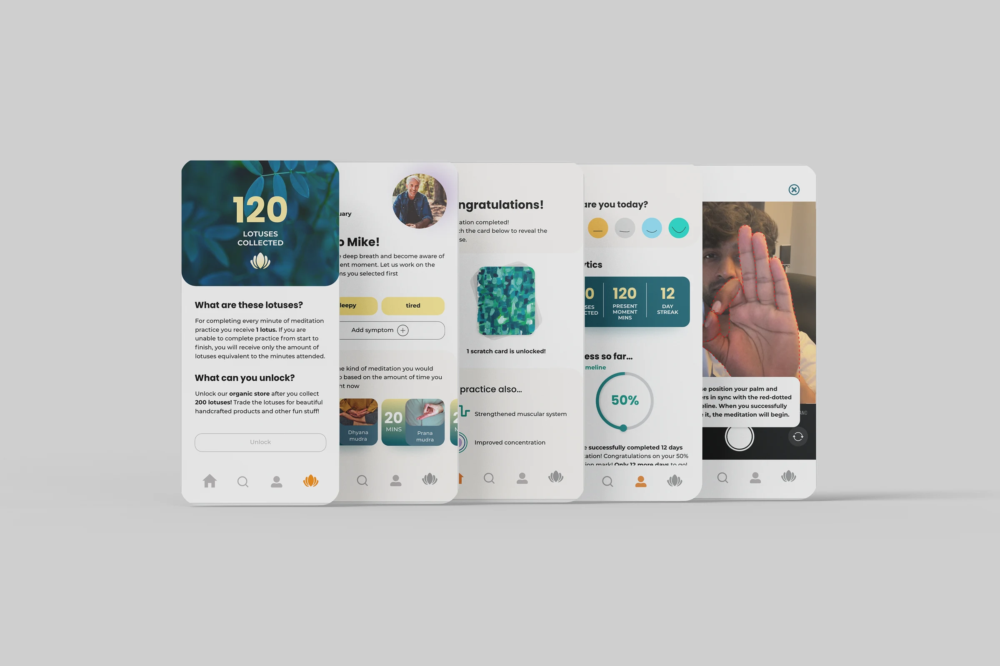
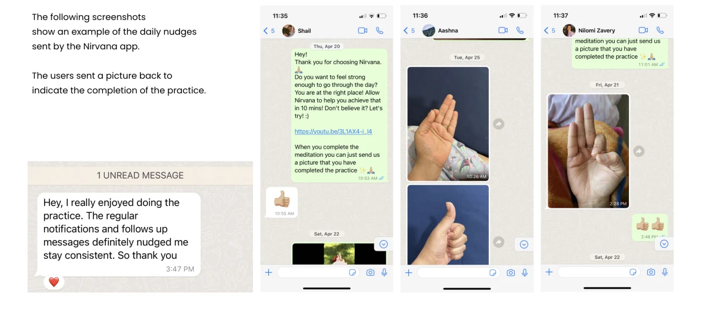
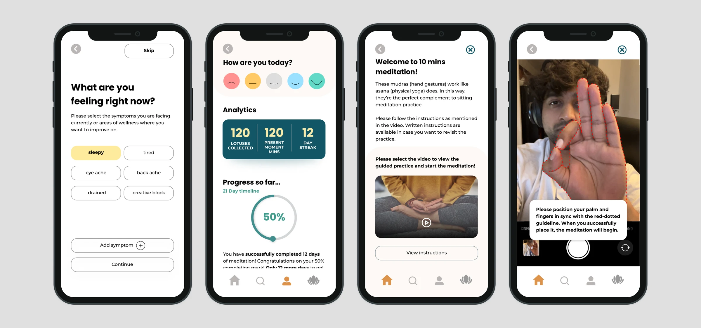

Nirvana · Part II
Meditation that adapts to how you feel
Two questions replace the library. One recommendation, with the reasoning stated in plain language. Includes a working prototype.
Nirvana · Part I · Behavioural system · Self-directed
Meditation apps don't fail because the content is bad. They fail in week one, when motivation runs out and nothing has replaced it. So I stopped designing sessions and started designing the loop that brings someone back to one.

01 The problem
Almost everyone who downloads a meditation app wants to meditate. That is not the constraint. The constraint is that the reward for meditating arrives weeks later, and the cost arrives every single morning.
Most platforms answer this with more content, more teachers, more courses, more categories, on the assumption that people leave because they ran out of things to listen to. The retention curves say otherwise. Drop-off concentrates in the first week, before content variety could plausibly matter.
The real problem wasn't content discovery. It was behavioural reinforcement.
02 Directions considered
The category default: expand the library, add teachers, add themes. Rejected because it addresses boredom, and people are not leaving out of boredom, they are leaving before they have heard enough to be bored. It also makes the choosing problem worse, which is exactly what Part II ended up having to fix.
Rejected: solves week six, not week oneCheap to build, and it does work until it breaks. A streak turns one missed day into a loss, and guilt is a poor motivator for a practice that is supposed to be about not fighting yourself. So I kept the rewards that build up over time, but removed the punishment. Miss a day and your progress stays where it was, and it never resets to zero.
Used in part: kept the rewards, dropped the penaltyTreat intrinsic motivation as something that arrives late, and design a scaffold that carries the user until it does: a cue they didn't have to remember, an action sized to the time they actually have, proof that it happened, a reward that accumulates, and a reason to return. Remove the scaffold's necessity, not the scaffold.
Built03 The system
Five stages, each one designed to remove a specific reason someone doesn't come back. The loop is the product; the meditation content is what it carries.
The user picks length before content, from what they actually have available. Deciding how long is far cheaper than deciding which one, and it moves the hardest decision out of the moment of least capacity.
You earn lotuses for every minute completed, and they unlock a store. The amount varies enough to stay interesting. There is no streak to break. Missing a day means you simply don't earn that day, and it never takes away what you already have.
Daily prompts arrive over direct messaging and are answered with an image. Confirming to a person is a materially stronger commitment than tapping done in an app, and it moves the cue outside the product the user is avoiding.

04 Validation
Nirvana anchors each session on a mudra, an Indian hand gesture. The whole concept rests on people across different cultural contexts being able to look at a depiction of one and reproduce it correctly, without instruction they'd have to read.
If that failed, nothing after it mattered. So I tested the assumption before designing any interface, using pretotyping. People from different cultural backgrounds were shown a gesture and asked to copy it, and I looked at whether they got it right rather than whether they liked it.
It held. That single result is what let the rest of the product proceed, and it is the reason Part II could build its whole library out of drawn gestures.


05 Outcomes
+60%
projected increase in 7-day retention, from nudges and accountability
+40%
projected increase in session completion, from time-adaptive entry
35%
projected improvement in first-week consistency
MODELLED, NOT MEASURED. These come from prototype testing with a small cohort, projected against published retention benchmarks for habit-formation products. They are directional evidence that the behavioural model works, not production results. Nirvana has never shipped to a live user base. The measured findings I do stand behind are simpler: participants completed the mudra-comprehension task accurately, and the accountability loop produced unprompted daily proof by week two.
06 What it surfaced
The reinforcement loop got people back past the first week. Then they opened the app, faced a library of sessions, and closed it again.
Reinforcement can carry someone to the door. It cannot carry them through a decision they have no capacity to make. That is the problem Part II was built to remove, and it is the reason these are two case studies rather than one.
Continue
Nirvana · Part II
Two questions replace the library. One recommendation, with the reasoning stated in plain language. Includes a working prototype.
I'd rather explain exactly how these were modelled than have you assume they were measured. Happy to walk through the testing.
Or copy it: gokhalesumeet2@gmail.com